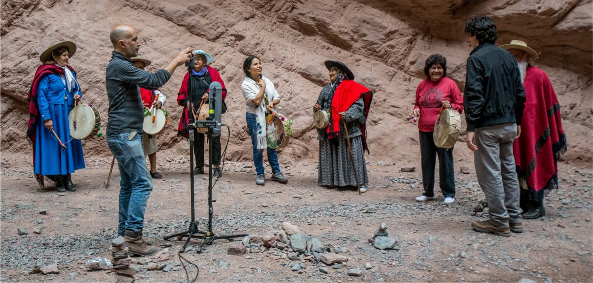
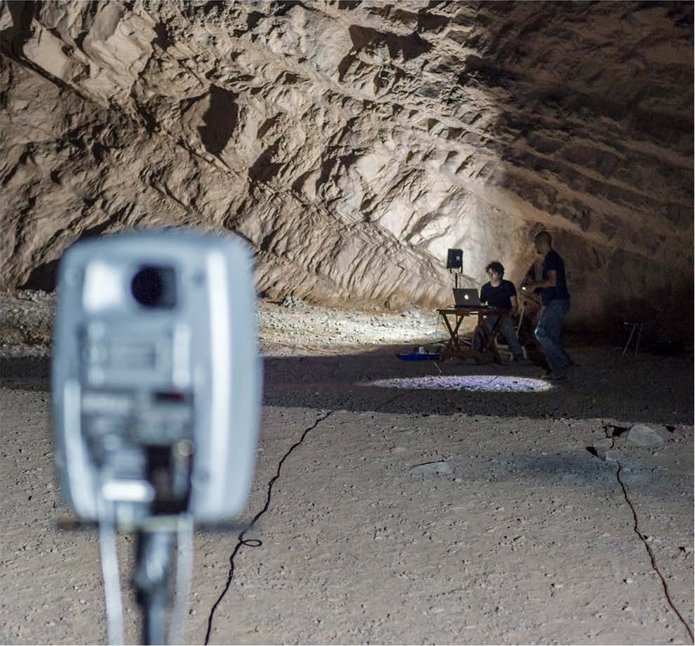
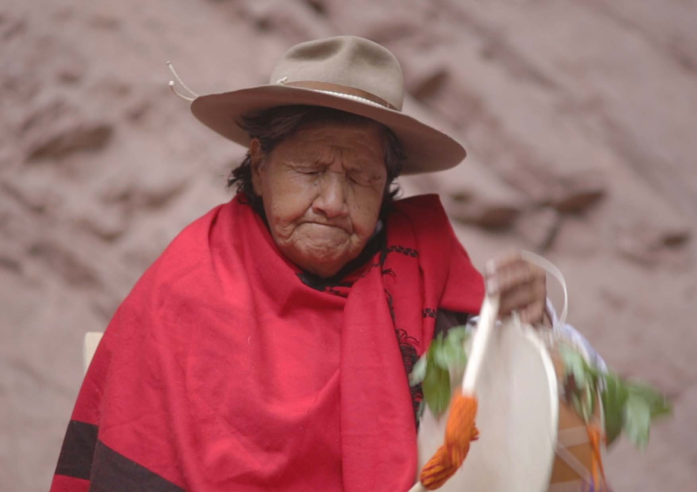

03 / 2017– / Acoustic heritage · Immersive recording · Documentary
Proyecto GRAPa
Listening to a voice and the place that answers it
Proyecto GRAPa · Manuel Eguía, Francisco Durante, Damián Payo, Mauro Zannoli

An enquiry into acoustic heritage through the relationship between copla singing, its communities and the natural spaces in which it is practised.
GRAPa — Grupo de Relevamiento Acústico del Patrimonio — was founded by Manuel Eguía in 2017. We combine acoustic measurement, immersive audiovisual recording and documentary filmmaking to investigate musical practices and their acoustic environments.
La Copla y el Anfiteatro de la Quebrada de las Conchas centres on a natural amphitheatre in the Calchaquí Valleys. With the active participation of coplera Mariana Carrizo and local singers, we recorded the interplay of voices, cajas and rock walls. The acoustic character of the place is part of the musical experience.
Three ways of documenting a listening culture
Our immersive copla recordings place the listener within the singing circle, preserving the spatial relationships between performers. The work is grounded in the knowledge and participation of the singers, including Mariana Carrizo.
We used Ambisonic and binaural impulse-response measurements to capture how the amphitheatre responds to sound. These recordings allow aspects of its acoustic character to be recreated through loudspeakers or headphones.
A documentary follows our April 2018 fieldwork and brings the acoustic survey together with the recording of coplas. The three strands document musical practice alongside the space in which it takes place.


